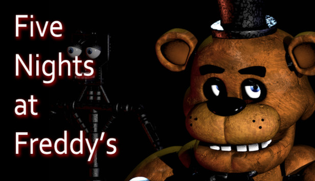

Quali sono i miei hobby principali?
Ne ho tanti per esemipo uscire con gli amici, programmare, aiutare i miei genitori e soprattutto giocare ai videogiochi.
Per quanto riguarda i videogiochi li conosco da quando avevo circa 7 anni e il mio primo videogioco fu uno della serie di Super Mario. Ma non è l'unico che mi ha interessato.
Infaftti ce ne sono tanti altri a cui mi sono appassionato:
- Five Nights at Freddy's

- Minecraft
- Splatoon

- Fire Emblem